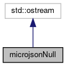

Inheritance diagram for microjsonNull:

Collaboration diagram for microjsonNull:

Classes | |
| class | nullBuffer |
The documentation for this struct was generated from the following file:
- /home/semlanik/Projects/qtprotobuf/src/protobuf/3rdparty/microjson/microjson.cpp